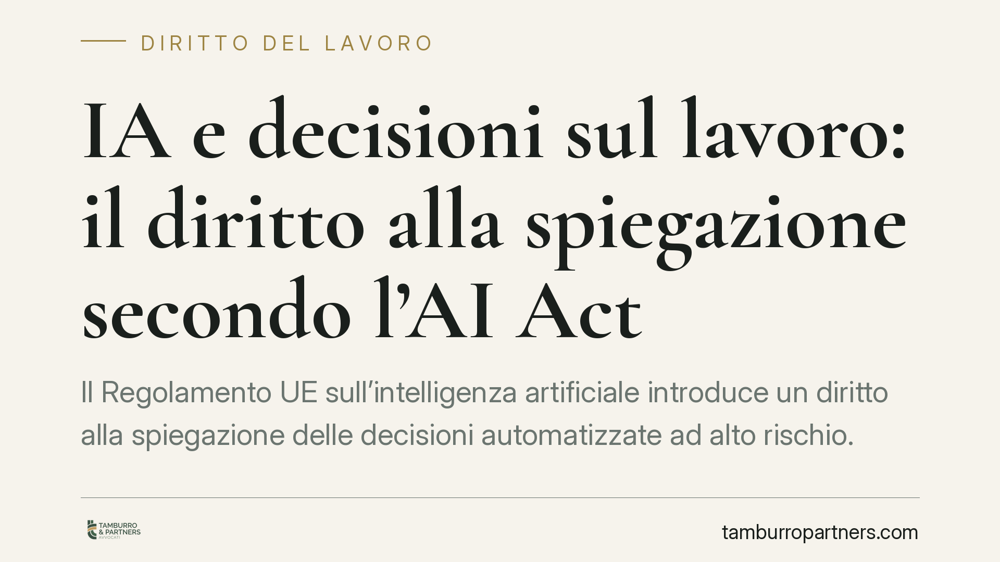

IA e decisioni sul lavoro: il diritto alla spiegazione secondo l'AI Act
Il Regolamento UE sull'intelligenza artificiale introduce un diritto alla spiegazione delle decisioni automatizzate ad alto rischio. Per i datori di lavoro che usano software di selezione, valutazione o gestione del personale cambiano gli obblighi. L'applicazione è scaglionata nel tempo e il decreto nazionale di adeguamento è ancora in corso di definizione: conviene prepararsi ora, non all'ultimo.

Il quadro: cosa dice davvero l'AI Act
Il Regolamento UE 2024/1689, noto come AI Act, è entrato in vigore il 1° agosto 2024. La sua applicazione, però, è scaglionata nel tempo.
I divieti sulle pratiche vietate (art. 5) si applicano dal 2 febbraio 2025. Le regole generali diventano applicabili dal 2 agosto 2026. Gli obblighi relativi ai sistemi ad alto rischio elencati nell'Allegato III decorrono, di norma, a ventiquattro mesi dall'entrata in vigore, con alcune eccezioni.
Perché interessa chi gestisce personale? L'Allegato III classifica come ad alto rischio diversi sistemi usati nel rapporto di lavoro: strumenti per il reclutamento e la selezione, per l'assegnazione di mansioni, per il monitoraggio e la valutazione delle prestazioni, per decisioni su promozioni o cessazioni.
Il diritto alla spiegazione
L'art. 86 dell'AI Act riconosce alla persona interessata il diritto a ottenere spiegazioni chiare e significative sul ruolo che il sistema di IA ha avuto in una decisione che la riguarda, quando questa produce effetti giuridici o la incide in modo analogo e significativo.
Tradotto: un lavoratore escluso da una selezione o penalizzato in una valutazione può chiedere di comprendere come il sistema abbia contribuito a quella decisione. La decorrenza concreta di questo diritto segue il calendario di applicazione del Regolamento.
Produttore e deployer: dove si colloca il datore di lavoro
L'AI Act distingue tra chi sviluppa un sistema (il fornitore, o produttore) e chi lo utilizza nella propria attività professionale (il deployer, o utilizzatore).
Il datore di lavoro che adotta un software di selezione o valutazione sviluppato da terzi è tipicamente un deployer. Non risponde dei difetti di progettazione dell'algoritmo, ma ha obblighi propri: uso conforme alle istruzioni del fornitore, sorveglianza umana, trasparenza verso i lavoratori, conservazione dei log.
Le sanzioni: attenzione alle soglie
Le sanzioni non sono uniformi. La soglia più alta — fino a 35 milioni di euro o il 7% del fatturato mondiale annuo — riguarda la violazione dei divieti sulle pratiche vietate dell'art. 5.
Le violazioni degli obblighi sui sistemi ad alto rischio hanno tetti distinti e inferiori: fino a 15 milioni di euro o il 3% del fatturato. Confondere i due piani porta a sovrastimare o sottostimare il rischio.
Il decreto nazionale di adeguamento all'ordinamento italiano, che individuerà anche le autorità competenti (il dibattito coinvolge soggetti come ACN, AgID, Banca d'Italia, Consob, Ivass e Garante per la protezione dei dati), è in corso di definizione. Finché non è pubblicato in forma definitiva, numeri e date nazionali vanno trattati con prudenza.
Il coordinamento con le norme già vigenti
Gli obblighi dell'AI Act non sostituiscono la normativa esistente, ma vi si sommano.
L'art. 4 dello Statuto dei lavoratori (L. 300/1970) disciplina i controlli a distanza e gli strumenti da cui derivi tale possibilità. Il Decreto Trasparenza (D.lgs. 104/2022, art. 1-bis) impone già oggi informazioni specifiche sull'uso di sistemi decisionali o di monitoraggio automatizzati. La disciplina privacy (GDPR, in particolare l'art. 22 sulle decisioni automatizzate) resta pienamente applicabile.
Un sistema di IA sul lavoro, quindi, va valutato contemporaneamente su più fronti normativi.
L'intervento umano effettivo
Un punto merita attenzione: la sorveglianza umana non può ridursi a una firma formale. L'intervento umano deve essere effettivo, cioè capace di comprendere l'output del sistema, di discostarsene e, se necessario, di correggerlo.
Una supervisione meramente nominale — in cui l'operatore ratifica senza reale margine di valutazione — non soddisfa il requisito e non protegge dal rischio sanzionatorio.
Cosa fare in concreto
- Mappare i sistemi: censire ogni software di IA usato in selezione, valutazione, assegnazione di mansioni o monitoraggio, verificando se rientra tra i sistemi ad alto rischio dell'Allegato III.
- Qualificare il proprio ruolo: stabilire se si agisce come deployer o, in casi particolari, come fornitore, perché gli obblighi cambiano.
- Aggiornare l'informativa ai lavoratori: coordinare trasparenza AI Act, Decreto Trasparenza e GDPR in un unico flusso informativo coerente.
- Garantire la sorveglianza umana: definire chi valuta gli output, con quali competenze e con quale potere effettivo di modifica.
- Predisporre le spiegazioni: strutturare procedure interne per rispondere, in modo chiaro, alle richieste di spiegazione sulle decisioni automatizzate.
È opportuno avviare questa verifica con anticipo rispetto alle scadenze di applicazione, così da arrivare preparati all'entrata a regime degli obblighi.
Disclaimer
Contributo informativo a cura di Tamburro & Partners Avvocati. Non costituisce parere legale.
Ogni storia di lavoro ha i suoi tempi.
Se gestisci HR e vuoi un confronto su contenzioso, ispezioni o licenziamenti, scrivi allo studio. Ti rispondiamo entro un giorno lavorativo.